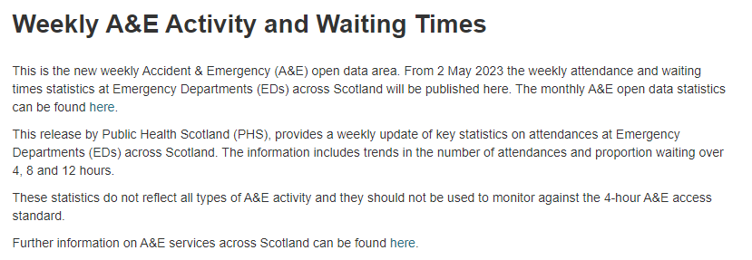

No feedback found for this session
Scope of the possible with R
R
overview
Welcome
- this session is a non-technical overview designed for service leads
Session outline
- Introducing R, and a bit of chat about the aims of this session
- Practical demo - take some data, load, tidy, analyse, produce outputs
- Strengths and weaknesses
- obvious
- less obvious
- Alternatives
- Skill development
Introducing R
- free and open-source statistical programming language
- multi-platform
- large user base
- prominent in health, industry, biosciences
Why this session?
- R can be confusing
- it’s code-based, and most of us don’t have much code experience
- it’s used for some inherently complicated tasks
- it’s a big product with lots of add-ons and oddities
- But R is probably the best general-purpose toolbox we have for data work at present
- big user base in health and social care
- focus on health and care-like applications
- not that hard to learn
- extensible and flexible
- capable of enterprise-y, fancy uses
- yet there’s signficant resistant to using R in parts of Scotland’s health and care sector
R demo
- this is about showing what’s possible, and give you a flavour of how R works
- we won’t explain code in detail during this session
- using live open data 
Hello world!
There are lots of ways to run R. In this session, we’ll demonstrate using the Rstudio Desktop IDE on Windows.
"Hello world!"[1] “Hello world!”
Packages
R is highly extensible using packages: collections of useful code
Create variables
url <- "https://www.opendata.nhs.scot/dataset/0d57311a-db66-4eaa-bd6d-cc622b6cbdfa/resource/a5f7ca94-c810-41b5-a7c9-25c18d43e5a4/download/weekly_ae_activity_20251123.csv"Load some open data
That’s a link to data about weekly A+E activity. It’s large-ish (approximately 40000 rows)
ae_activity <- read_csv(url)One small bit of cheating: renaming
Preview
| date | country | hb | loc | type | attend | n | n_in_4 | n_4 | perc_4 | n_8 | perc_8 | n_12 | perc_12 |
|---|---|---|---|---|---|---|---|---|---|---|---|---|---|
| 20230910 | S92000003 | S08000031 | G513H | Type 1 | All | 1493 | 1415 | 78 | 94.8 | 1 | 0.1 | 0 | 0.0 |
| 20220529 | S92000003 | S08000022 | H103H | Type 1 | Unplanned | 229 | 195 | 34 | 85.2 | 15 | 6.6 | 9 | 3.9 |
| 20250504 | S92000003 | S08000029 | F704H | Type 1 | New planned | 68 | 57 | 11 | 83.8 | 3 | 4.4 | 0 | 0.0 |
| 20240331 | S92000003 | S08000024 | S319H | Type 1 | All | 1130 | 1033 | 97 | 91.4 | 5 | 0.4 | 0 | 0.0 |
| 20221120 | S92000003 | S08000016 | B120H | Type 1 | All | 604 | 472 | 132 | 78.1 | 47 | 7.8 | 31 | 5.1 |
Removing data
| date | hb | loc | type | attend | n | n_in_4 | n_4 | n_8 | n_12 |
|---|---|---|---|---|---|---|---|---|---|
| 20150816 | S08000020 | N101H | Type 1 | Unplanned | 1146 | 1026 | 120 | 7 | 0 |
| 20220306 | S08000019 | V217H | Type 1 | All | 1151 | 795 | 356 | 68 | 3 |
| 20170611 | S08000031 | G107H | Type 1 | All | 1741 | 1599 | 142 | 2 | 0 |
| 20150607 | S08000022 | H202H | Type 1 | All | 587 | 560 | 27 | 3 | 0 |
| 20240107 | S08000028 | W107H | Type 1 | Unplanned | 114 | 103 | 11 | 0 | 0 |
Tidying data
| date | hb | loc | type | attend | n | n_in_4 | n_4 | n_8 | n_12 |
|---|---|---|---|---|---|---|---|---|---|
| 2016-11-13 | S08000031 | G107H | Type 1 | Unplanned | 1726 | 1457 | 269 | 22 | 0 |
| 2021-07-04 | S08000024 | S314H | Type 1 | All | 2247 | 1794 | 453 | 25 | 2 |
| 2020-07-19 | S08000022 | H212H | Type 1 | All | 175 | 171 | 4 | 0 | 0 |
| 2017-11-05 | S08000030 | T101H | Type 1 | All | 1010 | 970 | 40 | 1 | 0 |
| 2021-08-08 | S08000024 | S314H | Type 1 | All | 2465 | 1423 | 1042 | 215 | 59 |
Subset data
We’ll take a selection of 5 health boards to keep things tidy:
boards_sample <- c("NHS Borders", "NHS Fife", "NHS Grampian", "NHS Highland", "NHS Lanarkshire")Joining data
Those board codes (like S08000020) aren’t very easy to read. Luckily, we can add the proper “NHS Thing & Thing” board names from another data source.
boards <- read_csv("https://www.opendata.nhs.scot/dataset/9f942fdb-e59e-44f5-b534-d6e17229cc7b/resource/652ff726-e676-4a20-abda-435b98dd7bdc/download/hb14_hb19.csv")| HB | HBName | HBDateEnacted | HBDateArchived | Country |
|---|---|---|---|---|
| S08000024 | NHS Lothian | 20140401 | NA | S92000003 |
| S08000021 | NHS Greater Glasgow and Clyde | 20140401 | 20190331 | S92000003 |
| S08000031 | NHS Greater Glasgow and Clyde | 20190401 | NA | S92000003 |
| S08000023 | NHS Lanarkshire | 20140401 | 20190331 | S92000003 |
| S08000016 | NHS Borders | 20140401 | NA | S92000003 |
We can do something very similar with the A&E locations:
locs <- read_csv("https://www.opendata.nhs.scot/dataset/a877470a-06a9-492f-b9e8-992f758894d0/resource/1a4e3f48-3d9b-4769-80e9-3ef6d27852fe/download/ae_hospital_site_list_09_09_2025.csv") |>
select(2:4)
names(locs) <- c("loc_name", "loc", "postcode") # a bit of renaming to make the names easierAnd we can add the postcodes:
locs <- locs |>
rowwise() |>
mutate(long = PostcodesioR::postcode_lookup(postcode)$longitude,
lat = PostcodesioR::postcode_lookup(postcode)$latitude) # adding in some location informationWe can then join our three datasets together to give us data with the NHS Board names, A&E names, and locations:
ae_activity_locs <- ae_activity |>
filter(attend == "All") |>
left_join(boards, by = join_by(hb == HB)) |>
filter(HBName %in% boards_sample) |>
select(date, HBName, loc, type, n, contains("n_")) |>
mutate(date = ymd(date)) |>
left_join(locs) | date | HBName | loc | type | n | loc_name | postcode | long | lat |
|---|---|---|---|---|---|---|---|---|
| 2021-03-07 | NHS Borders | B120H | Type 1 | 467 | Borders General Hospital | TD6 9BS | -2.741945 | 55.59548 |
| 2019-12-01 | NHS Grampian | N411H | Type 1 | 569 | Dr Gray’s Hospital | IV301SN | -3.329946 | 57.64538 |
| 2016-07-24 | NHS Lanarkshire | L308H | Type 1 | 1275 | University Hospital Wishaw | ML2 0DP | -3.941738 | 55.77369 |
| 2025-09-21 | NHS Highland | H212H | Type 1 | 196 | Belford Hospital | PH336BS | -5.104701 | 56.81941 |
| 2022-11-13 | NHS Fife | F704H | Type 1 | 1381 | Victoria Hospital (NHS Fife) | KY2 5AH | -3.160138 | 56.12511 |
Basic plots
library(ggplot2)
ae_activity_locs |>
filter(HBName == "NHS Highland") |>
ggplot() +
geom_line(aes(x = date, y = n, colour = loc_name))
Looking across different measures
library(tidyr)
ae_activity_locs |>
filter(loc_name == "Raigmore Hospital") |>
select(date, n_in_4:n_12) |>
pivot_longer(-date) |>
group_by(date = floor_date(date, "month"), name) |>
summarise(value = mean(value)) |>
ggplot(aes(x = date, y = value, colour = name)) +
geom_line() +
geom_smooth(se = F)
Making that re-usable
graphmo <- function(hbname = "NHS Highland"){
ae_activity_locs |>
filter(HBName %in% hbname) |>
ggplot() +
geom_line(aes(x = date, y = n, colour = loc_name)) +
theme(legend.position = "bottom") +
xlab("Location") +
labs(colour = "") # hide the label
}
graphmo(c("NHS Grampian", "NHS Fife"))
A rubbish map
We’ve got latitude and longitude information for our A&E sites, which means we can plot them on a map:
ae_activity_locs |>
ggplot(aes(x = long, y = lat, label = loc_name, colour = HBName)) +
geom_point() +
theme_void() +
theme(legend.position = "none")
That’s not the most useful map I’ve ever seen. Luckily, there’s a package to help us:
Add to a map
ae_activity_locs |>
leaflet::leaflet() |>
leaflet::addTiles() |>
leaflet::addMarkers(~long, ~lat, label = ~loc_name)Then make that map more useful
Strengths
R offers enormous scope and flexibility, largely because of two features. First, R is based on the idea of packages, where you’re encouraged to outsource specialist functions to your R installation in a repeatable and standard way. There’s basically a package for everything - something over 20000 at present. Second, R encourages reproducible analytics: the idea being you write your script once, and then run it many times as your data changes, producing standardised outputs by design.
Together, that design makes R a force-multiplier for fancier data work: use packages to replicate your existing work in a reproducible way, then use the time saved in your routine reporting to improve and extend the work. There are other features of code-based analytics which make collaborating and developing more complex projects typically much smoother than they would be in non-code tools like Excel.
Weaknesses
- it’s code, and it takes some time (months to years) to achieve real fluency
- potentially harder to learn than some competitor languages and tools (Power BI, Python)
- very patchy expertise across H+SC Scotland
- complex IG landscape
- messy skills development journey